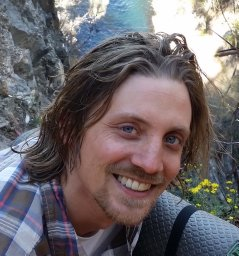
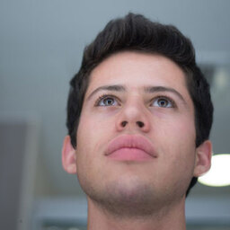
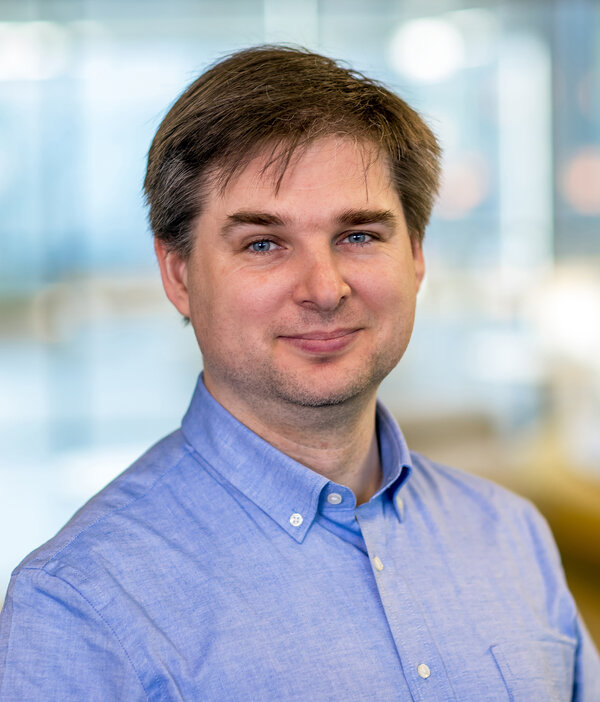
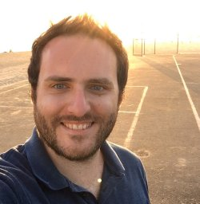
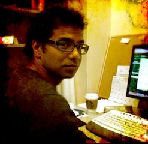
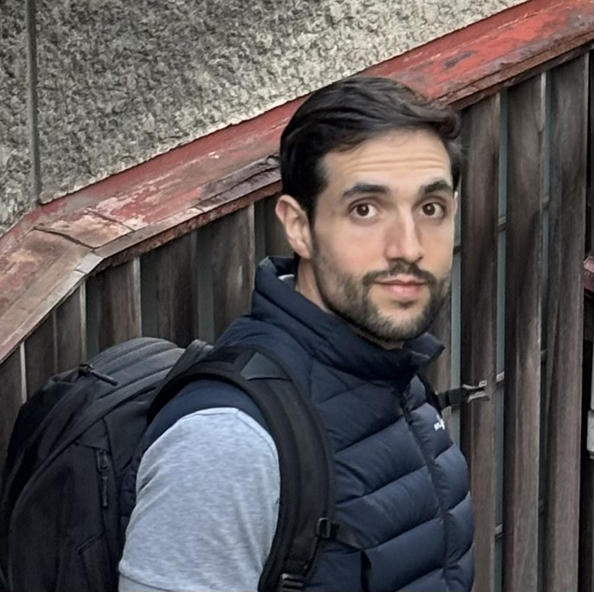
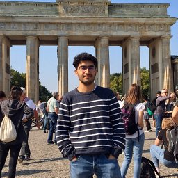

Important dates
All deadlines are end of day Anywhere on Earth (AoE).
| Apr 9, 2026 | Call for papers released |
| May 28, 2026 | Paper submission deadline |
| Jun 1–30, 2026 | Reviewing period |
| July 3, 2026 | Author notification |
| July 31, 2026 | Camera-ready deadline |
| Aug 10, 2026 | Program & papers online |
| Aug 21, 2026 | Workshop day — Amsterdam |
Call for papers
We invited two categories of submissions:
- Category A — Original papers: UAI-style formatting, up to 4 pages (no limit on supplementary material).
- Category B — Recently accepted and under-review papers at top ML / AI conferences (in the original format and length)
Review process: Single-blind peer review by the program committee. At least one author must attend in person. There will be no proceedings, so authors are free to submit their work elsewhere. Similarly, submissions under review at other venues will be allowed, provided they do not breach any dual-submission or anonymity policies of those venues. Accepted submissions will be made publicly visible here and on OpenReview. A journal special issue may be considered.
Submission Instructions: Original submissions must comply with the UAI style requirements and use the adjusted template SafeAI format. Papers should be no longer than 4 pages, excluding references. Authors are free to include a supplementary material in the same PDF (no page limit). Papers that have already been accepted or are under-review elsewhere may be submitted using the format and page limit of the venue where they were accepted/submitted. Any supplementary material may be included in the same PDF after the references; however, reviewers may choose at their own discretion whether to consult it.
Topics of interest
We solicit submissions presenting original research, theoretical results, and applied work within the following topics (list not exhaustive).
Foundations for safe and agentic AI
- Foundations of Safe AI across learning paradigms, including reinforcement and continual learning
- Sequential decision-making under uncertainty, including Bayesian decision theory and POMDPs
- Objective specification, reward design, and alignment for agentic systems
- Test-time scaling, adaptive inference, and safety implications of increasingly capable agents
Uncertainty, robustness, and control
- Uncertainty quantification, calibration, and propagation in decision-making
- Risk-sensitive planning and long-horizon safety under uncertainty
- Robustness to distribution shift, adversarial conditions, and non-stationary environments
- Safety and control in RL-based agents, including safe exploration and learning-based control
Interpretability, auditing, and evaluation
- Interpretability and explainability of agent policies, representations, and behaviors
- Methods to audit, measure, monitor, and evaluate agentic AI systems
- Benchmarks, metrics, and case studies for safe and aligned agents
- Adversarial evaluation and stress testing of agentic systems, including red teaming
Engineering, deployment, and applications
- Agent failure modes: reward hacking, goal misgeneralization, agent hijacking, and emergent behaviors
- Human-in-the-loop and oversight mechanisms for agentic systems
- Deployment-time safety of AI in safety-critical and autonomous systems
Invited speakers


More speakers to be announced.
Panel discussion
In-person speakers and leading researchers from academia and industry will discuss:
- Uncertainty and decision-making in autonomous agents
- Interpretability and oversight for action-taking systems
- Alignment and objective specification over long horizons
- Scalable evaluation and control of agentic systems
Accepted papers 35 papers
 Watch the talk
Recorded presentation on YouTube
↗
Watch the talk
Recorded presentation on YouTube
↗

 Watch the talk
Recorded presentation on YouTube
↗
Watch the talk
Recorded presentation on YouTube
↗
 Watch the talk
Recorded presentation on YouTube
↗
Watch the talk
Recorded presentation on YouTube
↗
 Watch the talk
Recorded presentation on YouTube
↗
Watch the talk
Recorded presentation on YouTube
↗
 Watch the talk
Recorded presentation on YouTube
↗
Watch the talk
Recorded presentation on YouTube
↗


Motivation
Ensuring the safety of AI systems has become a foundational challenge as they are increasingly deployed in high-stakes domains and subject to regulatory and societal expectations. Beyond accuracy and performance, Safe AI concerns reliability, robustness, interpretability, and alignment across the full system lifecycle.
This workshop focuses on technical and socio-technical challenges in Safe AI, with particular attention to agentic AI systems — learning-based systems that autonomously select actions, interact with an environment, and pursue objectives over time. In such systems, actions influence data, feedback, and behavior over extended horizons, making safety tightly linked to sequential decision-making, adaptation, and interaction. These challenges place uncertainty, robustness, and interpretability at the center of agentic safety, directly connecting them to foundational questions studied by the UAI community.
Organizers

Center for Safe AI Mykola Pechenizkiy Eindhoven University of Technology, NL

Associate Professor Yali Du King's College London, UK



Program committee
- Fabio Cozman, University of São Paulo, Brazil
- Albert Bifet, University of Waikato, New Zealand
- Cassio de Campos, Eindhoven University of Technology, Netherlands
- Jakub Tomczak, Chan Zuckerberg Initiative, USA
- Shaona Ghosh, NVIDIA, USA
- Deepak Padmanabhan, Queen’s University Belfast, UK
- Masaki Adachi, Toyota Motor Corporation, Japan
- João Vinagre, JRC / ECAT, European Commission, Spain
- Stiven Schwanz Dias, Embraer S.A., Brazil
- Qi “Cheems” Wang, Tsinghua University, China
- Carlos Mougan, EU AI Office / European Commission, Belgium / EU
- Tim Bakker, Qualcomm AI Research, Netherlands
- Matthew Renze, Johns Hopkins University, USA
- Danil Provodin, Booking.com, Netherlands
- Nicolò Felicioni, Spotify Research, UK
- Motasem Alfarra, Qualcomm AI Research, Netherlands
- Urja Khurana, Delft University of Technology, Netherlands
- Peter Nickl, University of Geneva, Switzerland
- Leon Lang, University of Amsterdam, Netherlands
- Alexander Timans, University of Amsterdam, Netherlands
- Rajeev Verma, University of Amsterdam, Netherlands
- Roshni Kamath, Technische Universität Darmstadt, Germany
- Jiazheng Li, King’s College London, UK
- Andrea Wynn, Johns Hopkins University, USA
- Chi Zhang, Johns Hopkins University, USA